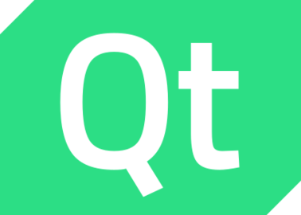

From embedded firmware to user interfaces, from cutting-edge scientific computing to database management, I’ve successfully developed a wide range of innovative software in a variety of industries.
The oldest have been running for over 15 years and are still providing great value to happy users.
C/C++ C# Python Java
SQL LabVIEW
Linux Windows
 FreeRTOS
FreeRTOS
NVidia Jetson ESP32
Microchip
Git Docker .NET  Qt
ROS
OpenCV Eigen Teststand
See my dedicated robotics page.
From simple object detection to complex configurations requiring multiple cameras, I master the fundamentals of computer vision:
By building automated test stations for various industries, I have enabled them to:
My expertise in this field has proven beneficial to several industries:
With over two decades of experience in a wide variety of backgrounds, I master a full range of skills to produce high quality software:
Some of my projects are available on my Github repository remipch.
Because it’s light, fast and customizable, Kate is my favorite editor.
I contribute with my KDE profile remipch.
I use OrganicMaps as my daily GPS application (for driving and hiking).
I try to fix OpenStreetMap whenever I encounter an incorrect data in real life, my OpenStreetMap profile is remipch.